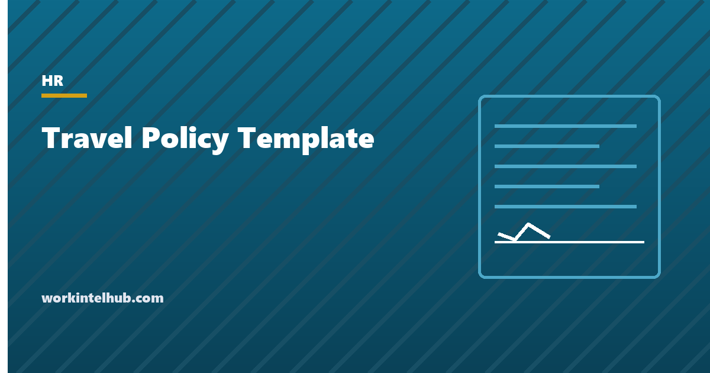

Travel Policy Template

A travel policy tells employees how trips are approved, what they may book, what the company pays for and what it does not. Its job is to make a thousand small decisions in advance so that nobody has to argue about a hotel bill afterwards. Good ones are short, set a few clear limits (class of travel, a lodging cap or the GSA rate, a per diem or a meal cap), and say what happens when the limits do not fit, which is most of the time someone travels to San Francisco.
The generator below writes the policy with your choices and the fiscal 2026 federal per diem figures. The rest of the page covers the decisions that matter, the per diem mechanics, the travel-time pay rules for hourly employees that most policies forget, and the safety and personal-travel clauses that save arguments.
Travel policy generator
Nothing typed here leaves your browser. Per diem figures are the fiscal 2026 GSA standard rates; the policy refers to the rate for the destination so it stays current when the rates change each October.
The decisions that matter
| Decision | Common setting | Notes |
|---|---|---|
| Approval | Manager for domestic, department head for international | One approval covering purpose, dates and estimate; everything else follows the policy |
| Booking lead time | 14 days | The single biggest cost lever; late bookings need a stated reason |
| Air class | Economy; premium economy over 6 hours or business over 8 with approval | A duration threshold avoids case-by-case negotiation |
| Lodging | GSA rate for the city, or a flat cap of $150 to $250 | The GSA rate scales by city automatically; a flat cap is simpler and wrong in expensive cities |
| Meals | GSA per diem, or actual up to $75 | Per diem needs no receipts and no arguments; actual is fairer in cheap cities |
| Rental cars | Up to midsize | Say whether to decline the collision waiver, which depends on the company's card or insurance |
| Points and miles | Traveller keeps them, may not drive the choice | Taking them away is unpopular and unenforceable |
The expense reimbursement policy is the companion document: it covers how to claim, the receipt rules and the accountable-plan conditions that keep reimbursements out of taxable wages. The travel policy says what may be booked; the expense policy says how it gets paid back.
Per diem, and why it is worth using
The federal government publishes per diem rates for every US location: a lodging rate and a meals-and-incidentals (M&IE) rate, updated each October. For fiscal 2026 (October 2025 to September 2026) the standard rates are $110 for lodging and $68 for M&IE, with around 300 higher-cost areas set individually; New York, San Francisco and Washington run well above the standard. Private employers may use them as reimbursement limits, and when they pay M&IE at or below the GSA rate no meal receipts are required, the amounts are not taxable, and the traveller keeps whatever they do not spend. The first and last day of travel are paid at 75 per cent, and meals provided by a conference or hotel are deducted.
The alternative, actual cost with receipts up to a cap, is fairer for travellers in cheap cities and more work for everyone. Most companies above a few dozen travellers move to per diem for meals and keep actual cost with a city-based limit for lodging, which is the generator's default. Refer to "the GSA rate for the destination" rather than naming the figures, so the policy does not go stale every October.
Travel time and pay for hourly employees
The clause most travel policies omit is the one most likely to produce a wage claim. Under the Fair Labor Standards Act, a non-exempt employee's ordinary commute is not work time, but travel that is part of the day's work is: travel between work sites, travel to a client from the office, and, for overnight trips, any travel that cuts across the employee's normal working hours, including on days they would not normally work. A Saturday flight from 9 to 1 for an employee who works 9 to 5 on weekdays is four hours of paid time. Time spent driving at the employer's request is work time whenever it occurs. Several states, California among them, count more of it than federal law does.
The generator's policy tells non-exempt travellers to record the time on their timesheet, and the overtime calculator shows what a week with two travel days does to the total. Exempt employees' pay does not change with travel, though many employers give a day in lieu for weekend travel; the salary versus hourly page covers the classification.
The clauses that save arguments
- Safety over cost. Nobody is required to travel somewhere under a do-not-travel advisory or where they feel unsafe, and in an emergency the traveller acts first and files the expense afterwards. Written down, this clause is a duty-of-care document; absent, it is a lawsuit.
- Personal days on a business trip. Allowed, at the traveller's cost, with a comparison quote for the business-only itinerary. Without the clause every extended trip is a negotiation.
- Conference hotels. Reimbursed at the conference rate even above the cap. The alternative is staff in a cheaper hotel across town missing the evening sessions that were the point.
- Collision waiver. One sentence saying whether to accept it, based on what the company card or insurance covers. Travellers guess otherwise, expensively.
- Companions. Family may travel at the employee's expense; the company pays the single rate.
- Currency. Converted at the rate on the date of the expense, with the card statement as evidence.
Put the policy in the handbook and have the booking tool enforce the air and lodging limits so that the policy is applied at booking rather than at the expense claim.
Key takeaways
- A travel policy sets the limits in advance: approval, lead time, air class by flight duration, lodging at the GSA rate or a cap, meals by per diem or a cap, rental car class.
- Fiscal 2026 GSA standard rates: $110 lodging, $68 meals and incidentals; refer to the rate for the destination rather than naming figures.
- Per diem at or below the GSA rate needs no receipts and is not taxable; first and last days at 75 per cent.
- Non-exempt employees are paid for travel during normal working hours, including on days off, and for all driving at the employer's request.
- Write the safety, personal-days, conference-hotel, collision-waiver, companion and currency clauses; they are where the arguments come from.
Frequently asked questions
What should a company travel policy include?
Who approves trips, how far ahead to book and where, the class of air travel (usually by flight duration), lodging limits, how meals are reimbursed, ground transport and rental car rules, international requirements, a safety clause, travel-time pay for hourly employees, personal travel combined with business, and how to claim. The generator on this page writes all of it with the fiscal 2026 per diem figures.
What are the GSA per diem rates for 2026?
For fiscal 2026, October 2025 to September 2026, the standard rate is $110 a night for lodging and $68 a day for meals and incidental expenses, with around 300 higher-cost areas set individually. Fiscal 2027 rates take effect October 1, 2026. Policies should refer to the rate for the destination rather than naming figures.
Should a travel policy use per diem or actual meal costs?
Per diem for most companies: no receipts, no arguments, not taxable at or below the GSA rate, and the traveller keeps what they do not spend. Actual cost with a daily cap is fairer in cheap cities and more work. Many employers use per diem for meals and actual cost up to a city-based limit for lodging.
Do hourly employees get paid for travel time?
Yes, for travel that is part of the work: between work sites, to clients from the office, and on overnight trips any travel that falls within their normal working hours, including on days they would not usually work. Driving at the employer's request is paid whenever it occurs. The ordinary commute is not. Some states count more; California is the main example.
Can employees keep airline miles earned on business travel?
Most policies say yes, with the condition that points may not influence the choice of carrier or hotel. Reclaiming them is unpopular, hard to administer and rarely worth the goodwill it costs.
Can an employee add personal days to a business trip?
Yes, if the policy allows it, at the employee's expense. The company pays what the business-only itinerary would have cost, and the employee keeps a comparison quote from the time of booking. Family members may travel along at the employee's cost.